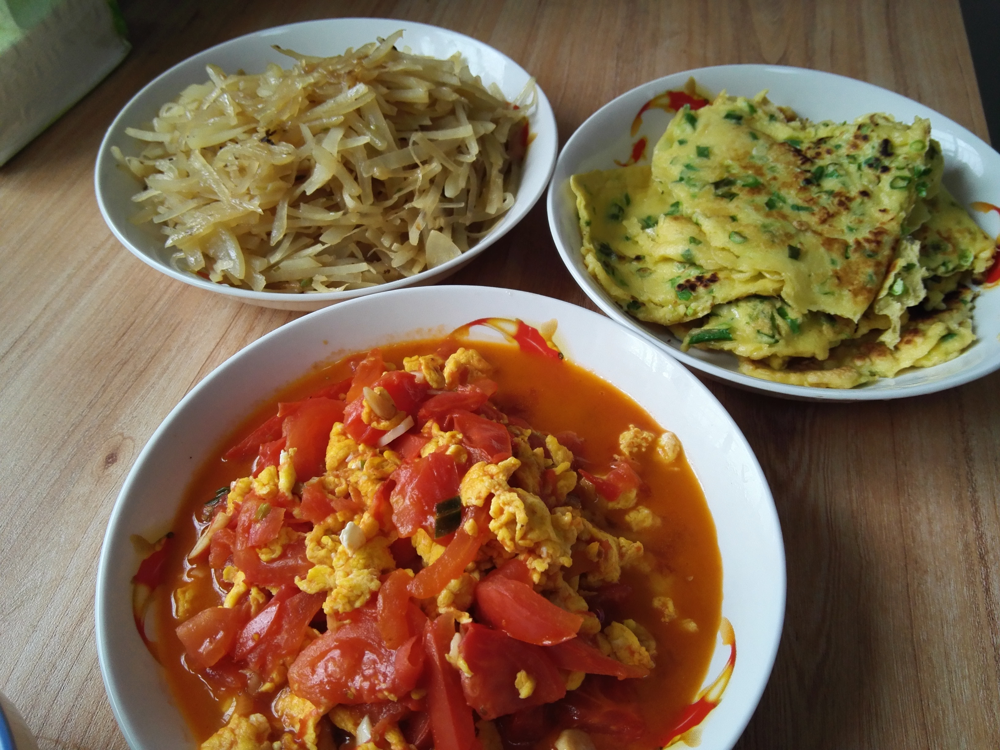
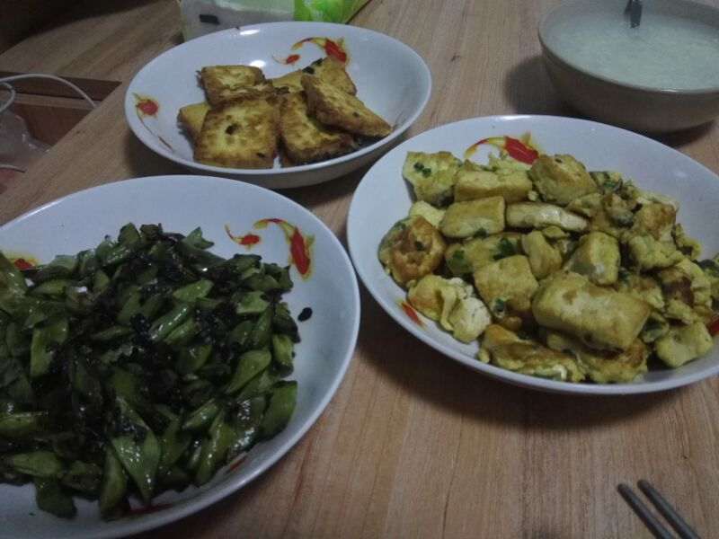

-
第一次一起做饭

2017年4月8日。终于可以一起做饭了哎，本想早早的起来买东西去呢，收拾收拾都已经九十点了。去超市转了一圈，买了面粉、土豆丝、西红柿。玲儿这切菜功夫也是一流的，土豆丝切掉真心不错。最香的还是摊的葱花饼了，简直色香味俱全啊！！
-
下午去逛了宜家，准备购置点装备，逛了好一会最后就买了一个杯子，两个小碗。不过这边的东西还真是实惠。晚饭依旧自己做，玲儿一直惦记着吃肉呢，一直担心我们做不好，这次时间也比较短，也没做成肉菜。买了豆角，豆腐。一个炒豆角，一个煎豆腐，一个鸡蛋炒豆腐。外加一个粥，吃起来也是相当满足哎。

真期待以后可以一起尝试做各种饭~~~
© Copyright © 2017.
For My Princess MissRing